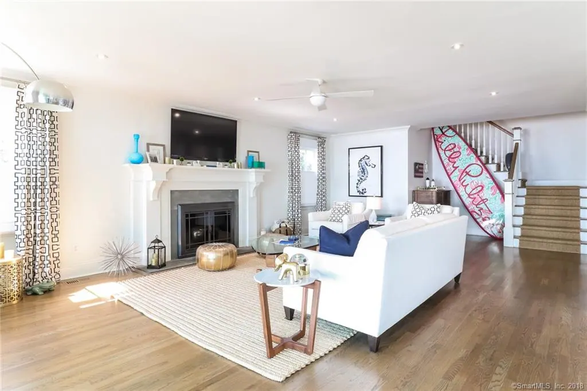
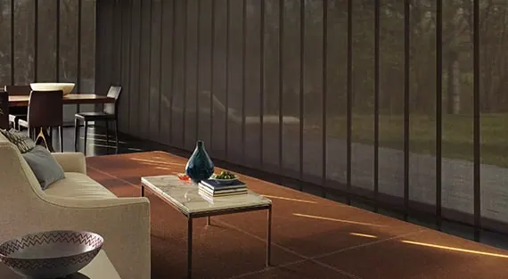
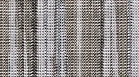
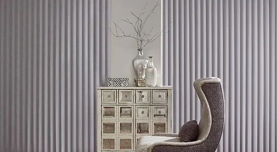
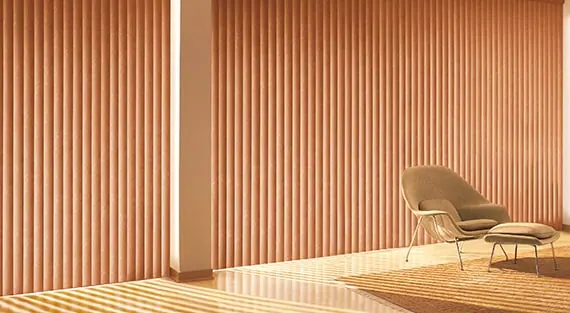
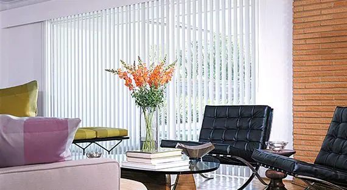

Hunter Douglas · Vertical blinds
Skyline® gliding window panels
For homes with expansive windows showcasing spectacular views, our Skyline® Gliding Window Panels have impressive reach and serve as a dramatic backdrop for your interior.
Sleek, modern and versatile panel track blinds
Give an expansive set of windows the attention it deserves with Skyline® Gliding Window Panels. Designed for large—but also suitable for smaller—windows, these broad panels are a statement all on their own. Beyond being beautiful, this window treatment also doubles as a functional room divider. When open, the panels stack tightly and provide unobstructed views. Left closed, they display their rich fabric and texture.

Key features
Extensive Fabric Collection
Available in a variety of colors, textures, opacities and openness factors, and with over 600 colors to choose from, Skyline panels offer the largest fabric collection on the market.
Room Divider
Skyline panels are a modern, stylish way to divide your space into separate, distinct areas.
Top Treatments
A fabric-wrapped cassette, sleek metal valance, fabric valance and box valance are available as top treatment options.
Smooth Operation
An interlocking bottom weight prevents panels from tangling and adds stability.
Proprietary Hardware
A patented two-channel track system lets an infinite number of panels attach to the slim 2 ½" headrail, allowing for minimal stackback and maximum view-through.
A few of our favorite fabrics
This is just a sampling of our fabrics. Request a consultation and we bring every fabric and texture to your home, so you can see them in your own light.
- Colchester Buff Colc
- Palmer Frosted
- Abyss Smoke Abys
- Empire Fence Post
- Yorkshire Whipcreme York
- Edinburgh Stunning Streets Edb
- Barista White Mocha
- Amato Concrete Amat

Nealie Ciel Nle
More vertical blinds

Cadence® soft vertical blinds
Enjoy the sumptuous appearance of soft drapery plus added operational control with Cadence® Soft Vertical Blinds.
Explore Cadence® soft vertical blinds
Somner® custom vertical blinds
If options are your first priority, our Somner® Custom Vertical Blinds offer the largest selection of colors, treatments and textures.
Explore Somner® custom vertical blinds
Vertical Solutions® vertical blinds
For those who prefer minimalistic design, our Vertical Solutions® Vertical Blinds are available in fabric and vinyl options that let your art and furniture take center…
Explore Vertical Solutions® vertical blinds
Questions we hear often
What makes Skyline® gliding window panels different?
Give an expansive set of windows the attention it deserves with Skyline® Gliding Window Panels. Designed for large—but also suitable for smaller—windows, these broad panels are a statement all on their own. Beyond being beautiful, this window treatment also doubles as a functional room divider. When open, the panels stack tightly and provide unobstructed views. Left closed, they display their rich fabric and texture.
What is Extensive Fabric Collection on Skyline gliding window panels?
Available in a variety of colors, textures, opacities and openness factors, and with over 600 colors to choose from, Skyline panels offer the largest fabric collection on the market.
Can I see Skyline gliding window panels samples in my home?
Yes. What you see online is just a sampling. Book a consultation and we bring the full range of fabrics to your home, so you can choose in your own light.
Do you measure and install Skyline gliding window panels?
Yes. We take care of measuring and installation. Our experienced installers are fully trained and will ensure a perfect fit for your new Skyline gliding window panels, and they show you how everything works before they leave.

Let’s look at your windows together.
A free visit, real samples, and an honest recommendation. No pressure to buy on the spot.